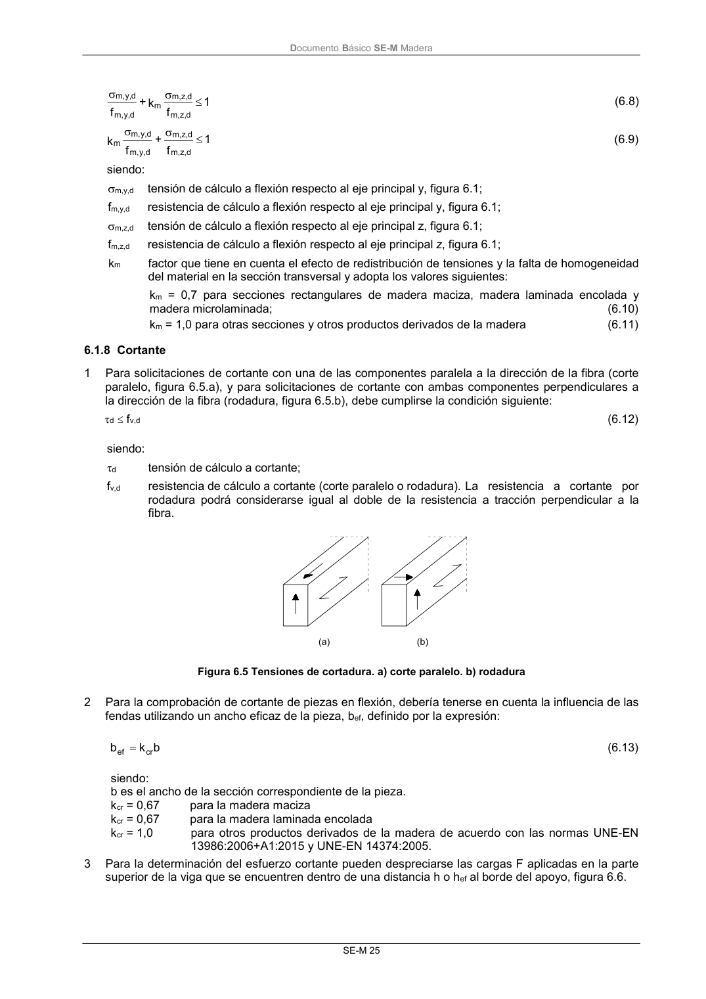
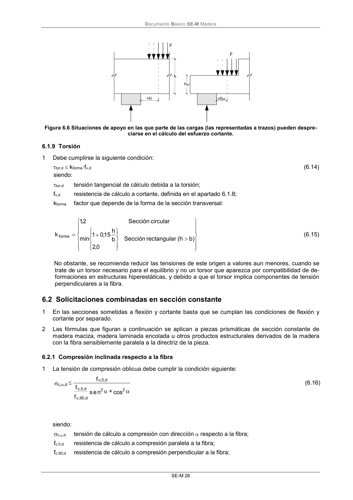

DB-SE-M · 6.1.8 Cortante · versión 2019-12-20 · capa oficial
Formatos: JSON compacto · Markdown · PDF fuente
Ámbito del documento · texto del ámbito · documento y tablas
ID técnico a0067 · PDF pág. 31-32 · jerarquía no validada por persona · contrastado con el literal de la página 31 (candidato tipográfico); no validado por persona · padre: a0059
6.1.8 Cortante 1 Para solicitaciones de cortante con una de las componentes paralela a la dirección de la fibra (corte paralelo, figura 6.5.a), y para solicitaciones de cortante con ambas componentes perpendiculares a la dirección de la fibra (rodadura, figura 6.5.b), debe cumplirse la condición siguiente: d fv,d (6.12) siendo: d tensión de cálculo a cortante; fv,d resistencia de cálculo a cortante (corte paralelo o rodadura).La resistencia a cortante por rodadura podrá considerarse igual al doble de la resistencia a tracción perpendicular a la fibra. Figura 6.5 Tensiones de cortadura. a) corte paralelo. b) rodadura 2 Para la comprobación de cortante de piezas en flexión, debería tenerse en cuenta la influencia de las fendas utilizando un ancho eficaz de la pieza, bef, definido por la expresión: b k b cr ef (6.13) siendo: b es el ancho de la sección correspondiente de la pieza. kcr = 0,67 para la madera maciza kcr = 0,67 para la madera laminada encolada kcr = 1,0 para otros productos derivados de la madera de acuerdo con las normas UNE-EN 13986:2006+A1:2015 y UNE-EN 14374:2005. 3 Para la determinación del esfuerzo cortante pueden despreciarse las cargas F aplicadas en la parte superior de la viga que se encuentren dentro de una distancia h o hef al borde del apoyo, figura 6.6. DocumentoBásico SE-M Madera SE-M 26 Figura 6.6 Situaciones de apoyo en las que parte de las cargas (las representadas a trazos) pueden despre- ciarse en el cálculo del esfuerzo cortante.


PDF fuente redistribuible: copia fiel enlazada en esta página (SHA256 verificado).